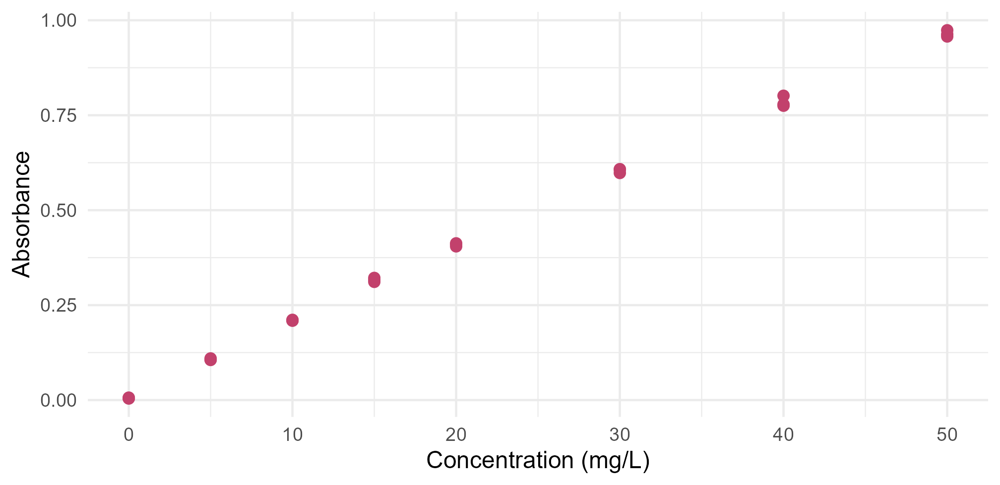
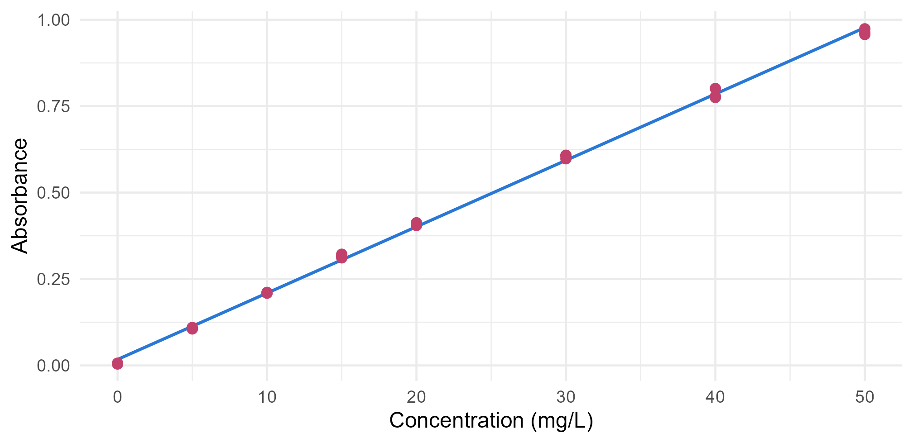
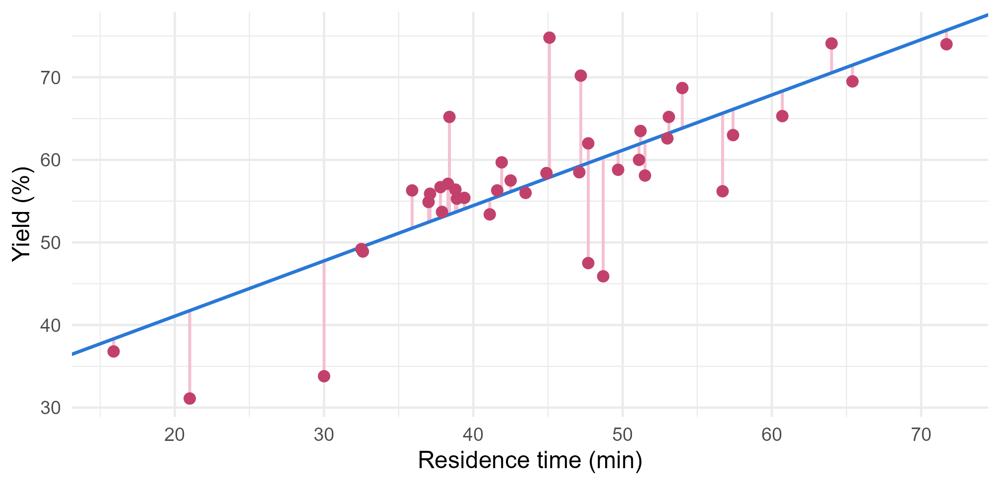

Module 2 · Lesson 2 of 15 Week 32 of 160 About 5–7 hours
Simple linear regression
Fitting the best straight line, and reading what its numbers mean
Write down the simple linear regression model, derive the least-squares line with calculus, fit it with lm(), interpret the slope and intercept, work with fitted values and residuals, measure fit with R-squared, and use a calibration line to predict an unknown.
If you’ve done a lab course in analytical chemistry, you’ve made a calibration curve: measure some standards of known concentration, plot the readings, add a trendline in Excel, and use it to find the concentration of an unknown. That trendline is a simple linear regression, and this lesson opens the box. What makes one line the “best”? Where do its numbers come from? What do they mean, and how good is the fit?
A correlation says two variables move together. A regression line says how much one moves when the other does, and lets you predict. Let’s draw the best line there is!
In this lesson you’ll:
- write down the simple linear regression model
- see what “least squares” means, and derive its formulas with calculus
- fit lines with
lm()and interpret the slope and intercept - work with fitted values and residuals
- measure how well the line fits with R^2 and the residual standard error
- predict new values, and use a calibration line backwards to find an unknown
The model
The lab’s UV-Vis spectrophotometer measures how much light a sample absorbs. By the Beer-Lambert law, the absorbance should be proportional to the concentration of the product. To calibrate the instrument, the lab measured 8 standards of known concentration, from 0 (a blank) to 50 mg/L, three times each:
calibration <- read_csv("data/calibration.csv", show_col_types = FALSE)
head(calibration)
#> # A tibble: 6 × 4
#> standard conc_mgL replicate absorbance
#> <chr> <dbl> <dbl> <dbl>
#> 1 Std01 0 1 0.0041
#> 2 Std01 0 2 0.0049
#> 3 Std01 0 3 0.0065
#> 4 Std02 5 1 0.110
#> 5 Std02 5 2 0.106
#> 6 Std02 5 3 0.106
ggplot(calibration, aes(x = conc_mgL, y = absorbance)) +
geom_point(size = 2.2, color = "#C2416C") +
labs(x = "Concentration (mg/L)", y = "Absorbance") +
theme_minimal(base_size = 12)
A straight line describes this beautifully. In statistics, we write that idea as a model:
Y_i = \beta_0 + \beta_1 x_i + \varepsilon_i, \qquad i = 1, \dots, n.
Here Y_i is the response (the absorbance of reading i), and x_i is the predictor (the concentration). The intercept \beta_0 and the slope \beta_1 describe the true line. The error \varepsilon_i is everything else: electronic noise, small differences between the cuvettes, tiny pipetting errors. We assume the errors average zero, so the true line gives the average response at each x.
We never get to see \beta_0 and \beta_1. The data give us estimates, which we write b_0 and b_1 (many books write \hat\beta_0 and \hat\beta_1), and the fitted line \hat{y} = b_0 + b_1 x. The rest of this lesson is about how to choose them.
Least squares
For any line you might draw, each point misses it by a vertical distance, its residual:
e_i = y_i - \hat{y}_i = y_i - (b_0 + b_1 x_i).
A good line has small residuals. The least-squares line is the one with the smallest sum of squared errors:
\text{SSE} = \sum_{i=1}^{n} e_i^2 = \sum_{i=1}^{n} \bigl(y_i - b_0 - b_1 x_i\bigr)^2 .
Squaring stops positive and negative misses from cancelling out, and it punishes big misses more than small ones. Minimizing SSE is a calculus problem, and its solution has a neat form:
b_1 = \frac{S_{xy}}{S_{xx}} = \frac{\sum (x_i - \bar{x})(y_i - \bar{y})}{\sum (x_i - \bar{x})^2}, \qquad b_0 = \bar{y} - b_1 \bar{x}.
The slope is the covariance of x and y divided by the variance of x (the n - 1s cancel). Since the correlation is the covariance divided by both standard deviations, you can also write b_1 = r \, s_y / s_x: the slope is the correlation, converted into the units of y per unit of x. And the formula for b_0 means that the line always passes through the point of averages, (\bar{x}, \bar{y}).
NoteGo deeper: deriving the least-squares line
Treat SSE as a function of the two unknowns, b_0 and b_1, and set both partial derivatives to zero:
\frac{\partial\, \text{SSE}}{\partial b_0} = -2 \sum (y_i - b_0 - b_1 x_i) = 0, \qquad \frac{\partial\, \text{SSE}}{\partial b_1} = -2 \sum x_i (y_i - b_0 - b_1 x_i) = 0.
These are the normal equations from Lesson 0.14, written out for one predictor. The first says \sum e_i = 0. Dividing it by n gives \bar{y} - b_0 - b_1\bar{x} = 0, so b_0 = \bar{y} - b_1\bar{x}. Put that into the second equation:
\sum x_i \bigl[(y_i - \bar{y}) - b_1 (x_i - \bar{x})\bigr] = 0 .
Because \sum \bar{x}(y_i - \bar{y}) = 0 and \sum \bar{x}(x_i - \bar{x}) = 0, you can replace the x_i in front by x_i - \bar{x} for free, which gives S_{xy} - b_1 S_{xx} = 0, so b_1 = S_{xy}/S_{xx}.
Is it a minimum? The matrix of second derivatives is 2\begin{pmatrix} n & \sum x_i \\ \sum x_i & \sum x_i^2 \end{pmatrix}, whose determinant is 4 n S_{xx}. That’s positive as long as the x values aren’t all equal, so SSE is a bowl with a single lowest point. (If all the xs were equal, any line through (\bar x, \bar y) would do as well as any other, and the slope couldn’t be estimated at all.)
The two normal equations also tell you two facts about the residuals of any least-squares line with an intercept: they sum to zero, and they’re uncorrelated with x. Whatever pattern was in the data along x, the line has taken it out.
Your turn. Compute the least-squares slope and intercept of the calibration line from the formulas.
The denominator is S_{xx} = \sum (x_i - \bar{x})^2, so sum((x - mean(x))^2). Then b_0 = \bar{y} - b_1\bar{x}.
x <- calibration$conc_mgL
y <- calibration$absorbance
b1 <- sum((x - mean(x)) * (y - mean(y))) / sum((x - mean(x))^2)
b0 <- mean(y) - b1 * mean(x)
c(b0 = b0, b1 = b1)An intercept of 0.0173 and a slope of 0.0192 absorbance units per mg/L.
Your turn. Can you beat least squares? Write a function that computes the SSE of any line, then compare the least-squares line with a line through the origin with a slope of 0.02, which looks just as good by eye.
Each residual is the absorbance minus the line’s prediction: calibration$absorbance - predicted.
sse <- function(b0, b1) {
predicted <- b0 + b1 * calibration$conc_mgL
sum((calibration$absorbance - predicted)^2)
}
c(least_squares = sse(0.01728051, 0.01919739), guess = sse(0, 0.02))0.0027 against 0.0068: the guess has two and a half times the squared error. Try any other numbers you like. Nothing beats the least-squares line, by definition.
NoteGo deeper: why squares, and not distances?
You could minimize the sum of absolute residuals instead. That gives least absolute deviations regression, which is less sensitive to outliers (it’s to least squares what the median is to the mean). So why is least squares the default?
- The calculus is easy, and there’s always exactly one answer, in a formula.
- In Lesson 0.7, you saw that the mean is the single number with the smallest sum of squared deviations. Least squares is the same idea, with a line instead of a single number.
- If the errors are normally distributed, the least-squares line is also the maximum-likelihood line, the one that makes the data most probable. Lesson 15 explains maximum likelihood.
- Even without normality, the Gauss-Markov theorem says least squares gives the most precise estimates among all unbiased estimates that are linear in the ys. You’ll see what that means in Lesson 4.
And why vertical distances? Because the model treats x as known exactly, and puts all the error in y. That fits calibration well: the standards’ concentrations are known far more precisely than the absorbance readings. If both variables had big errors, other methods (like “orthogonal” or Deming regression) would be fairer.
Fitting lines with lm()
You won’t compute those sums by hand again. lm(), for linear model, fits the least-squares line. Its formula reads “response tilde predictor”, as in “absorbance as a function of concentration”:
fit_cal <- lm(absorbance ~ conc_mgL, data = calibration)
coef(fit_cal)
#> (Intercept) conc_mgL
#> 0.01728051 0.01919739What do the numbers mean?
- The slope, 0.0192, is the instrument’s sensitivity: each extra mg/L adds 0.0192 absorbance units, on average.
- The intercept, 0.0173, is the predicted absorbance of a blank, with no product at all. Keep an eye on that one: the three blanks actually measured 0.0052 on average. A gap like that is a clue, and you’ll find out what it means in Lesson 8.
Here’s the line on the data. geom_smooth(method = "lm") fits the same model for the plot:
ggplot(calibration, aes(x = conc_mgL, y = absorbance)) +
geom_smooth(method = "lm", formula = y ~ x, se = FALSE, color = "#2a78d6", linewidth = 0.8) +
geom_point(size = 2.2, color = "#C2416C") +
labs(x = "Concentration (mg/L)", y = "Absorbance") +
theme_minimal(base_size = 12)
Your turn. Now a noisier relationship. Fit the yield of the March batches as a function of their residence time, and look at the coefficients.
The response goes on the left of the ~: yield_pct ~ residence_min.
fit <- lm(yield_pct ~ residence_min, data = batches)
coef(fit)Each extra minute in the reactor goes with 0.67 percentage points more yield, on average. And the intercept, 27.7%? That’s the predicted yield after 0 minutes, which is nonsense: with no time in the reactor, nothing reacts. The shortest batch ran for 16 minutes, so the line has no data to stand on down there. The intercept is simply where the line crosses the axis, and it only means something when x = 0 is inside, or near, the range of the data.
Fitted values and residuals
Every observation gets a fitted value, the line’s prediction for its x, and a residual, what’s left over. fitted() and resid() pull them out of a model:
batches <- read_csv("data/batches.csv", show_col_types = FALSE)
fit <- lm(yield_pct ~ residence_min, data = batches)
batches |>
mutate(fitted = fitted(fit), residual = resid(fit)) |>
select(batch_id, residence_min, yield_pct, fitted, residual) |>
head(4)
#> # A tibble: 4 × 5
#> batch_id residence_min yield_pct fitted residual
#> <chr> <dbl> <dbl> <dbl> <dbl>
#> 1 B01 47.2 70.2 59.3 10.9
#> 2 B02 37.9 53.7 53.1 0.640
#> 3 B03 32.5 49.2 49.4 -0.244
#> 4 B04 60.7 65.3 68.3 -3.03Batch B01 ran for 47.2 minutes, so the line predicts 59.3%. It made 70.2%, a residual of +10.9 points: it did better than its residence time alone would suggest. Here are all the residuals, as vertical lines from each batch to the fitted line:
batches |>
mutate(fitted = fitted(fit)) |>
ggplot(aes(x = residence_min, y = yield_pct)) +
geom_segment(aes(xend = residence_min, yend = fitted), color = "#F4C0D1", linewidth = 0.7) +
geom_abline(intercept = coef(fit)[1], slope = coef(fit)[2], color = "#2a78d6", linewidth = 0.8) +
geom_point(size = 2.2, color = "#C2416C") +
labs(x = "Residence time (min)", y = "Yield (%)") +
theme_minimal(base_size = 12)
Least squares made the sum of the squares of these pink lines as small as it could be. And as the Go deeper box promised, the residuals add up to zero, apart from rounding errors: sum(resid(fit)) gives about 10^{-14}.
Residuals are the most useful diagnostic tool in regression. They’re what the model couldn’t explain, so any pattern in them is a pattern the model missed. Lesson 8 is all about reading them.
Your turn. Which batch did best compared to its residence time? Find the batch with the largest residual.
resid(fit) gives the residuals, in the same order as the rows of batches.
fit <- lm(yield_pct ~ residence_min, data = batches)
batches |>
mutate(residual = resid(fit)) |>
slice_max(residual) |>
select(batch_id, residence_min, yield_pct, residual)B11: 74.8% after only 45 minutes, 16.9 points above the line. Something else went right for that batch. Is it the catalyst, the temperature, or luck? Multiple regression (Lesson 5) can start to answer that.
How good is the fit? R²
Start with how much the yields vary in total, around their mean. That’s the total sum of squares, SST. The line splits it into two parts: the part it explains, SSR (the regression sum of squares, how far the fitted values spread around the mean), and the part it doesn’t, SSE:
\underbrace{\sum (y_i - \bar{y})^2}_{\text{SST}} = \underbrace{\sum (\hat{y}_i - \bar{y})^2}_{\text{SSR}} + \underbrace{\sum (y_i - \hat{y}_i)^2}_{\text{SSE}} .
The coefficient of determination is the fraction that’s explained:
R^2 = \frac{\text{SSR}}{\text{SST}} = 1 - \frac{\text{SSE}}{\text{SST}} .
It runs from 0 (the line explains nothing) to 1 (every point sits on the line). In simple regression, it’s exactly the square of the correlation. That’s why it’s written R^2.
summary() prints it, along with a lot more that the next lesson explains:
summary(fit)
#>
#> Call:
#> lm(formula = yield_pct ~ residence_min, data = batches)
#>
#> Residuals:
#> Min 1Q Median 3Q Max
#> -14.3926 -1.9188 0.6458 2.8965 16.9181
#>
#> Coefficients:
#> Estimate Std. Error t value Pr(>|t|)
#> (Intercept) 27.68057 4.12814 6.705 6.18e-08 ***
#> residence_min 0.66965 0.08954 7.479 5.58e-09 ***
#> ---
#> Signif. codes: 0 '***' 0.001 '**' 0.01 '*' 0.05 '.' 0.1 ' ' 1
#>
#> Residual standard error: 6.282 on 38 degrees of freedom
#> Multiple R-squared: 0.5955, Adjusted R-squared: 0.5848
#> F-statistic: 55.93 on 1 and 38 DF, p-value: 5.584e-09R^2 = 0.595: residence time accounts for about 60% of the batch-to-batch variation in yield. The calibration line’s R^2 is 0.9989.
The same output gives the residual standard error, s = \sqrt{\text{SSE}/(n-2)} = 6.28 points. It’s the typical size of a residual: the line usually misses a batch’s yield by up to about 6 points. Why divide by n - 2? Because the line used up two pieces of information, b_0 and b_1, to fit the data. It’s the same reason the sample standard deviation divides by n - 1.
Two warnings about R^2:
- A high R^2 doesn’t mean the model is right. The calibration line has R^2 = 0.9989, and in Lesson 8 you’ll find it’s still the wrong shape. A straight line through a gentle curve fits “well” by this measure.
- A low R^2 doesn’t mean x is unimportant. 0.67 points of yield per minute is a big effect for a plant. It’s just that other things move the yield too.
Your turn. Compute R^2 for the batches from its definition, 1 - \text{SSE}/\text{SST}.
SST measures the spread around the mean: mean(batches$yield_pct).
fit <- lm(yield_pct ~ residence_min, data = batches)
sse <- sum(resid(fit)^2)
sst <- sum((batches$yield_pct - mean(batches$yield_pct))^2)
1 - sse / sst0.595, the same as summary() reports, and the same as cor(batches$residence_min, batches$yield_pct)^2.
Predicting, and calibrating
To predict, give predict() a data frame of new x values, with the same column name as in the model:
predict(fit, newdata = tibble(residence_min = c(45, 60)))
#> 1 2
#> 57.81491 67.85969A batch with 60 minutes of residence is predicted to make about 67.9%. How sure is that? The next lesson puts intervals around predictions. For now, remember the residual standard error: individual batches miss the line by around 6 points.
Be careful with extrapolation, predicting outside the range of the data. The March residence times ran from 16 to 72 minutes. Inside that range, the line is backed by data. Outside it, you’re assuming the straight line carries on, and in chemistry it rarely does for long: yields can’t pass 100%, and reactions slow down as the reactant runs out.
A calibration line is used the other way round. The lab measures an unknown sample’s absorbance, y_0, and wants its concentration. Solving y_0 = b_0 + b_1 x_0 for x_0 gives
\hat{x}_0 = \frac{y_0 - b_0}{b_1} .
This is called inverse prediction, or simply calibration.
Your turn. An unknown sample has an absorbance of 0.462. Use the calibration line to estimate its concentration.
Divide by the slope, which is the second coefficient: b[2].
fit_cal <- lm(absorbance ~ conc_mgL, data = calibration)
b <- coef(fit_cal)
(0.462 - b[1]) / b[2]About 23.2 mg/L. Remember this sample: in Lessons 8 and 9, you’ll find out whether a straight line was the right tool.
Challenge round
Challenge 1 · Through the origin? The Beer-Lambert law says that a blank should read zero, so why not force the line through the origin? lm(absorbance ~ 0 + conc_mgL) fits a line with no intercept. Fit it, and compare its SSE with the SSE of the ordinary line, 0.00267.
The SSE is the sum of the squared residuals: sum(resid(fit0)^2).
fit0 <- lm(absorbance ~ 0 + conc_mgL, data = calibration)
c(slope = coef(fit0), sse = sum(resid(fit0)^2))The slope rises a little, to 0.0197, and the SSE doubles, to 0.0053. Forcing the line through zero costs fit, which already hints that the straight line isn’t telling the whole story.
Now look at summary(fit0)$r.squared: it says 0.9992, higher than the ordinary line’s 0.9989, despite the worse fit! Without an intercept, R computes R^2 around zero instead of around the mean, so the two numbers aren’t comparable. Never use R^2 to choose between models with and without an intercept.
Challenge 2 · Swapping x and y. If yield goes up 0.67 points per minute, residence time should go up 1/0.67 = 1.49 minutes per point of yield, right? Fit residence time as a function of yield and find out.
Now residence time is the response: residence_min ~ yield_pct.
c(one_over_slope = 1 / coef(lm(yield_pct ~ residence_min, data = batches))[2],
swapped_slope = coef(lm(residence_min ~ yield_pct, data = batches))[2])1.49 against 0.89. The two lines are different! Each one minimizes the errors in its own response, so each slope is “pulled in” towards zero, by the factor r. With the formula b_1 = r\,s_y/s_x, the two slopes multiply to r^2 = 0.595, not 1. It’s regression to the mean again: a batch with an extreme yield is predicted to have a less extreme residence time, and the other way round.
For the calibration data, with r = 0.9994, the two lines almost coincide: 52.03 against 52.09 mg/L per absorbance unit. That’s why the direction hardly matters for a good calibration, but matters a lot for noisy data.
Quick quiz
1. What does the least-squares line minimize?
The residuals always sum to zero, so that can’t be the target. Least squares minimizes the sum of the squared vertical residuals.
2. The fitted line is \widehat{\text{yield}} = 27.7 + 0.67 \times \text{residence}. What does 0.67 mean?
The slope is the change in the average response for each unit of the predictor. The share of variation explained is R^2, a different number.
3. What does the intercept, 27.7, mean for the batches?
The intercept is the prediction at x = 0. The shortest batch ran for 16 minutes, so it’s an extrapolation. (The line does pass through the point of averages, though: 44.75 minutes and 57.6%.)
4. A regression of yield on residence time has R^2 = 0.595. Which statement is right?
R^2 is the fraction of the total sum of squares that the line explains.
5. The calibration line has R^2 = 0.9989. What can you conclude?
R^2 measures closeness, not correctness. A gentle curve can still give a very high R^2 with a straight line. Residual plots (Lesson 8) are the way to check the shape.
6. Why does the residual standard error divide by n - 2?
Each estimated parameter uses up one degree of freedom. With n - 2, s^2 is an unbiased estimate of the error variance.
Wrap-up
You’ve fitted, interpreted and checked your first regression lines! Here’s what you’ve learned:
- The model: Y = \beta_0 + \beta_1 x + \varepsilon. The true line gives the average response at each x, and the error is everything else.
- Least squares picks the line with the smallest sum of squared residuals: b_1 = S_{xy}/S_{xx} = r\,s_y/s_x and b_0 = \bar{y} - b_1\bar{x}. The line passes through (\bar{x}, \bar{y}).
lm(y ~ x, data = ...)fits it.coef(),fitted(),resid(),summary()andpredict()get the pieces out.- Interpreting: the slope is the change in the average response per unit of x. The intercept is the prediction at x = 0, which only means something if 0 is within the data.
- Residuals sum to zero and are uncorrelated with x. Any pattern left in them is something the model missed.
- Fit: R^2 = 1 - \text{SSE}/\text{SST} is the fraction of variation explained (r^2 in simple regression), and s = \sqrt{\text{SSE}/(n-2)} is the typical size of a residual. Neither one proves the model is right.
- Prediction: stay inside the range of the data. For calibration, invert the line: \hat{x}_0 = (y_0 - b_0)/b_1.
TipPractice in RStudio (optional, about an hour)
Download calibration.csv and batches.csv into your project’s data-raw/ folder.
- Excel against R. Open
calibration.csvin Excel, add a linear trendline with its equation and R^2, and compare them withlm(). Then try Excel’s=SLOPE(),=INTERCEPT()and=RSQ()functions. They’re all least squares. - The broom package. Run
broom::tidy(fit),broom::glance(fit)andbroom::augment(fit)on the batch model. They return the coefficients, the fit statistics, and the data with fitted values and residuals, as tidy data frames that are easy to plot and filter. - Your own minimizer. Use
optim(c(0, 0), function(b) sse(b[1], b[2]))with the SSE function from this lesson, and check that the numerical minimum lands on the least-squares formulas. - Least absolute deviations. Install the quantreg package and fit
quantreg::rq(yield_pct ~ residence_min, data = batches). It fits the line with the smallest sum of absolute residuals. How different is its slope?
NoteKey words from this lesson
- Simple linear regression
- A model of a response as a straight-line function of one predictor, plus random error: Y = \beta_0 + \beta_1 x + \varepsilon.
- Response and predictor
- The variable being modeled (y), and the variable used to model it (x). Also called the dependent and independent variables.
- Fitted value
- The line’s prediction for an observation, \hat{y}_i = b_0 + b_1 x_i.
- Residual
- What the line misses for an observation, e_i = y_i - \hat{y}_i.
- Least squares
- Choosing the coefficients that minimize the sum of squared residuals.
- Sums of squares (SST, SSR, SSE)
- The total variation around the mean, the part the model explains, and the part it leaves in the residuals. SST = SSR + SSE.
- Coefficient of determination (R^2)
- The fraction of the total variation that the model explains, SSR/SST.
- Residual standard error
- s = \sqrt{\text{SSE}/(n-2)}, the typical size of a residual.
- Extrapolation
- Predicting outside the range of the data the model was fitted to.
- Inverse prediction (calibration)
- Using a fitted line backwards, to estimate the x that produced an observed y.
NoteWant to read more?
- Penn State STAT 501, Lesson 1: Simple Linear Regression. Sections 1.1 to 1.5 cover the least-squares line, the error variance and R^2, with many examples.
- Introduction to Modern Statistics, “Linear regression with a single predictor”. A gentle, picture-rich introduction to fitting and interpreting lines.
- NIST/SEMATECH e-Handbook of Statistical Methods, “Calibration”. How measurement labs build and use calibration curves, including the inverse prediction you did here.